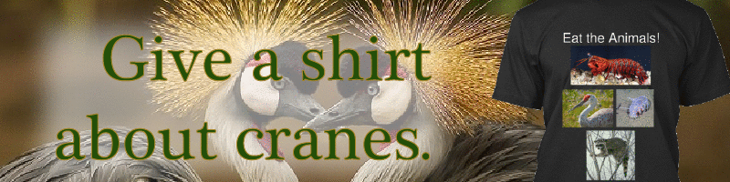

Anatomy

-
Bone strength: very hard
1
-
Weight: 4 pounds
2
-
Height: 2 feet
3
-
Average life span: 12 weeks
4
-
Handles: 2 unless you count the feet
5
References
- 1"Bones and You", Richard Dawkins, 2014
- 2"Weights and You", Susan Boyle, 2012
- 3"Heights and You", Drunky Audino, 2018
- 4"Average Life Spans and You", Charles Darwin, 2011
- 5"Handles and You", TJ Eakle